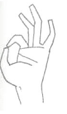
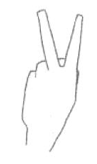
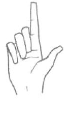
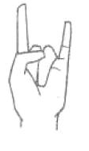
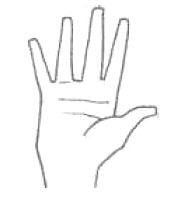

Culture plays a very important role in Human Factors. Not only just when it comes to colors or shapes or the way something is arranged, but also when you look at gesture. For example, we shake our head yes by nodding in a vertical up and down motion and a no as a horizontal left to right motion. It may seem like second nature to us and as if it is innate. When you look at another country such a Bulgaria, this is the complete opposite. For my research, I looked at other gestures that mean different things. Specifically I focused on hand gestures. Below are listed five hand gestures that you may recognize in America. Next to them are listed what they mean in other countries.

In Europe and North America, this sign may stand for okay, or a positive, affirmative action. In the mediterranean regions, Russia, Brazil, and Turkey it means something much different. It is an insult in those regions, it means gay man and is an insult against someone's sexuality. In France and Belgium it is the number zero, but can also mean worthless. Whereas in Japan it simply means money or coinage.

Again in an american place, this symbol would simply mean peace or the number two. It is very harmless to do that in America. In Britain, Australia, and New Zeland it means "Up Yours!" Two very contrasting views on that simple little gesture.

In Europe this is the gesture for the numerical value two. In Great Britain, Australia, and New Zeland it is the numerical value one. In United States it could be the number one, it could be calling attention to yourself, or wait one moment. However in Japan, this is an insulting gesture.

This gesture in America is a logo used for cheering on Texas University, it is also used by people that listen to metal music at concerts as a symbol of their music style. In the Mediterranean it is a sign that your wife is being unfaithful to you. Italy it means protection against evil when gestured towards something. In South America it is similar, it is protection against bad luck.

This gesture has a quite odd meaning in two different cultures. In western culture it means I give up or that you are holding no weapon and intend to give up and surrender to one's will. Think of police in America. However, in Greece this gesture means, "Up Yours... twice!" Quite a clash of meaning.
As we can see from these clashes in gesture, it is very important to know what hand gesture you are using according to where you are. This would be very important when you are designing software for multiple cultures and languages. The last gesture of an open hand could also mean stop in American culture. If you were to put this in Greek software, you would obviously irritate the user, as you would be insulting them by displaying this picture when you really mean to stop the current action or hold on and read this. Being aware of these differences could mean the difference between insulting a culture or placing yourself amongst them. It would help you to in a way to bring you together as you share the same ideas and it shows you are attempting to acclimate yourself.